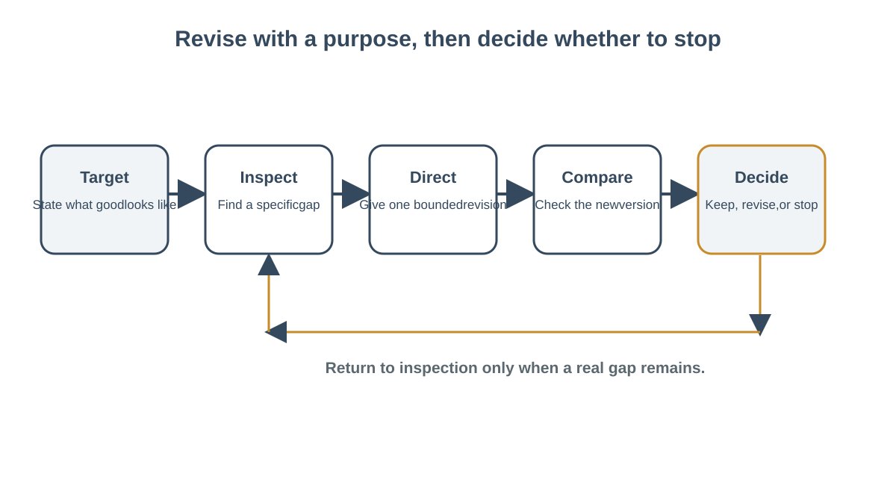

← Week 3: Iterate, Collaborate, and Communicate
From First Response to Useful Revision
Learning objectives: Turn a workplace need into a clear request with goal, audience, context, constraints, and a useful output format; then improve the request through iteration.; Use targeted follow-up directions to improve a draft against explicit criteria.
Content
From first response to useful revision
A conversational AI response can feel like an answer because it arrives in complete sentences. In workplace communication, it is safer to treat that response as a draft candidate. It may contain useful phrasing, miss the intended audience, misread a constraint, or add a detail that was never supplied. The person using it must compare the output with the task and decide what happens next.
This reading offers a repeatable method for iterating: define the target, inspect the result, diagnose a gap, give a bounded follow-up, and check again. The method works with a conversational AI service, a colleague’s draft, or your own writing. It does not depend on a particular product.

Figure: Purposeful iteration returns to a draft only when a real gap remains.
Begin with a target you can check
Before drafting, translate a broad wish into a few observable criteria. “Make this notice helpful” is difficult to evaluate. “Put the date and action in the first sentence, use plain language, stay under 90 words, and include only details from the approved schedule” is much easier. Criteria may include the reader, purpose, facts, tone, length, format, and boundaries.
A target does not need to be elaborate. For a fictional schedule notice, the target might be: “A visitor should quickly see that the front desk opens at 10 a.m. Tuesday, the building opens at 8:30 a.m., and program times do not change.” This describes what the reader needs rather than asking for a general impression of quality.
Inspect before you prompt again
Read the draft once for meaning before polishing its style. Ask what it says, what it leaves out, and what it adds. Separate the output into categories:
- Useful: information or structure that supports the task.
- Missing: a requested detail, context, or next step that did not appear.
- Unclear: wording that could lead the reader to different interpretations.
- Unsupported: a claim not present in the supplied material or verified evidence.
- Out of scope: content that may be plausible but is not needed or authorized.
This sorting prevents a common mistake: treating every defect as a tone problem. A warm tone cannot repair a false date. A clearer paragraph cannot supply a missing policy. Different defects need different remedies.
For example, a fictional center’s schedule note says the building opens at 8:30 a.m., the front desk opens at 10 a.m., and programs stay at their usual times. A draft says, “The center opens late Tuesday due to staff training. All activities move to 10 a.m.” The reader may find the sentence clear, but it includes an invented cause and changes program times. The correct response is to remove or verify those claims, not to request a friendlier style.
Diagnose the gap in concrete terms
A good diagnosis points to evidence. Instead of “This feels off,” say: “The draft says all activities move to 10 a.m., but the supplied schedule says program times are unchanged.” Instead of “Make it more professional,” identify the intended reader and the desired change: “Use a calm, direct tone for visitors. Put the opening times in the first two sentences.”
You can use a simple sentence frame: “The draft currently ___; the target requires ___; change ___ while keeping ___.” For the schedule example: “The draft currently says the programs move to 10 a.m.; the target requires their posted times to remain unchanged; correct that line while keeping the two opening times.” This frame combines the problem, target, and boundary.
Name what works, too. If a draft has a useful opening or sensible order, say so. Targeted revision can preserve strengths and reduce unnecessary churn. Asking for a complete rewrite each time may discard useful work and introduce new errors.
Give a bounded follow-up
A follow-up should tell the tool what to change, what to retain, and where to stop. Useful directions are specific and testable: “Move the date to the first sentence,” “remove the cause because no reason is given,” “use only the facts in the note,” or “list questions about missing information instead of guessing.” Keep the original goal in view; otherwise, each new message may pull the draft in a different direction.
For writing tasks, useful follow-ups often address one or two dimensions at a time: order, length, reading level, tone, or format. If multiple defects are related, combine them with explicit constraints. You can ask for two alternatives when there is a meaningful choice—such as a warmer version and a shorter version—then decide based on the audience. Generating many versions without a decision criterion produces more text, not necessarily better work.
Do not ask the tool to invent missing facts. If an official date, policy, or approval is absent, either consult the source owner or leave a clear placeholder for a person to fill. A model can make a plausible guess, but plausibility is not evidence. Keep the source of each factual detail identifiable.
Compare against the same criteria
After a revision, return to the original target. Check each criterion explicitly. Did the draft include the correct date? Is the action easy to find? Did it remain within the length limit? Did a new claim appear? Did the tone fit the reader? Comparing against the same target is more reliable than asking whether the new version “seems better.”
A revision may solve one problem and create another. For instance, shortening a notice may remove a necessary distinction between building access and front-desk service. When that happens, update the draft or criteria based on the actual need; do not accept a regression simply because another line improved.
Choose a stopping point
Iteration should have a stopping rule. Examples include: stop when every required detail is present and checked against its source; stop after two revisions and finish manually; or pause if the draft needs a fact that has not been approved. More rounds do not guarantee better work. They can consume time, create new wording problems, and obscure the original goal.
A useful decision log has four labels: Accepted, Changed, Checked, Omitted. A learner might write: “Accepted: the date is easy to find. Changed: replaced ‘usual times’ with ‘program times are unchanged.’ Checked: opening times against the approved notice. Omitted: an invented cause.” This record shows how the person used the draft and what review occurred. It can also support handoff or later disclosure when appropriate.
A practice routine
Choose a low-risk fictional task such as a reminder, meeting summary, or short process explanation. Write a task brief and identify the approved facts. Draft once. Mark one strength and two specific gaps. Write a bounded follow-up, then compare the revised text with the original criteria. Record what you accepted, changed, checked, and omitted. If a tool is unavailable, use a partner’s draft or your own rough version and follow the same routine.
The reusable skill is not a clever prompt. It is the ability to see the gap between an output and a goal, communicate a precise correction, and make a human decision based on evidence. That is how a fluent first response becomes a responsible piece of work.